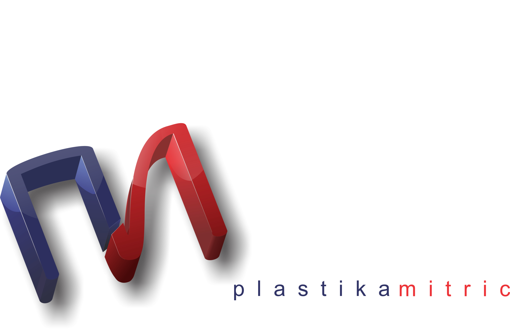

<div class="parallax">
	
	<div class="main">

		<div class="text hsContainer">
			<p>
				<p class="naslov">Plastika Mitrić</p>
				<div class="pm">
					
					Za razliku od 90% domaćeg tržišta koje se bavi preprodajom uvoznog okova i profila, naša kompanija svoje poslovanje bazira na sopstevenoj
					proizvodnji dugoj skoro tri decenije. <br>
					Našim proizvodnim programom i kvalitetom izrade smo jedna od retkih firmi na domaćem tržištu koja može da konkuriše inostranim kompanijama u ceni i kvalitetu proizvoda. <br>
					Samo neke od prednosti proizvodnje su: <br><br>
					- kraći rok izrade <br>
					- jeftiniji proizvod vrhunskog kvaliteta <br>
					- mogućnost izrade proizvoda po Vašim potrebama <br>
					- brže dostavljanje i ušteda na transportu <br>
				</div>
				

				<p class="drugiNaslov">Istorija</p>

				Plastika Mitrić osnovana je 1986 godine kao mala porodična firma sa sedištem u Novoj Pazovi. <br>
					Tada pre skoro trideset godina naša kompanija tada pod imenom folija plast je postavila svoje temelje na proizvodnji lajsni i ručica da bi vrlo brzo ta proizvodnja počela da se proširuje na ostale proizvode od plastike i uz osnivanje sopstvene alatnice kompanija je uspešno mogla da 
					prati trendove u proizvodnji i osvoji domaće tržište brzim prilagodjavanjem u izradi alata. <br>
				Danas, sa zadovoljstvom možemo da kažemo da skoro tri decenije skupljenog iskustva i saradnja sa stalnim klijentima samo po sebi jasno govori o kvalitetu naše proizodnje i načinu poslovanja.

		
				<p class="treciNaslov">Poslovna orijentacija</p>
				Plastika Mitrić osnovana je 1986 godine kao mala porodična firma sa sedištem u Novoj Pazovi. <br>
					Tada pre skoro trideset godina naša kompanija tada pod imenom folija plast je postavila svoje temelje na proizvodnji lajsni i ručica da bi vrlo brzo ta proizvodnja počela da se proširuje na ostale proizvode od plastike i uz osnivanje sopstvene alatnice kompanija je uspešno mogla da 
					prati trendove u proizvodnji i osvoji domaće tržište brzim prilagodjavanjem u izradi alata. <br>
				Danas, sa zadovoljstvom možemo da kažemo da skoro tri decenije skupljenog iskustva i saradnja sa stalnim klijentima samo po sebi jasno govori o kvalitetu naše proizodnje i načinu poslovanja.
			</p>
		</div>
	</div>
</div>